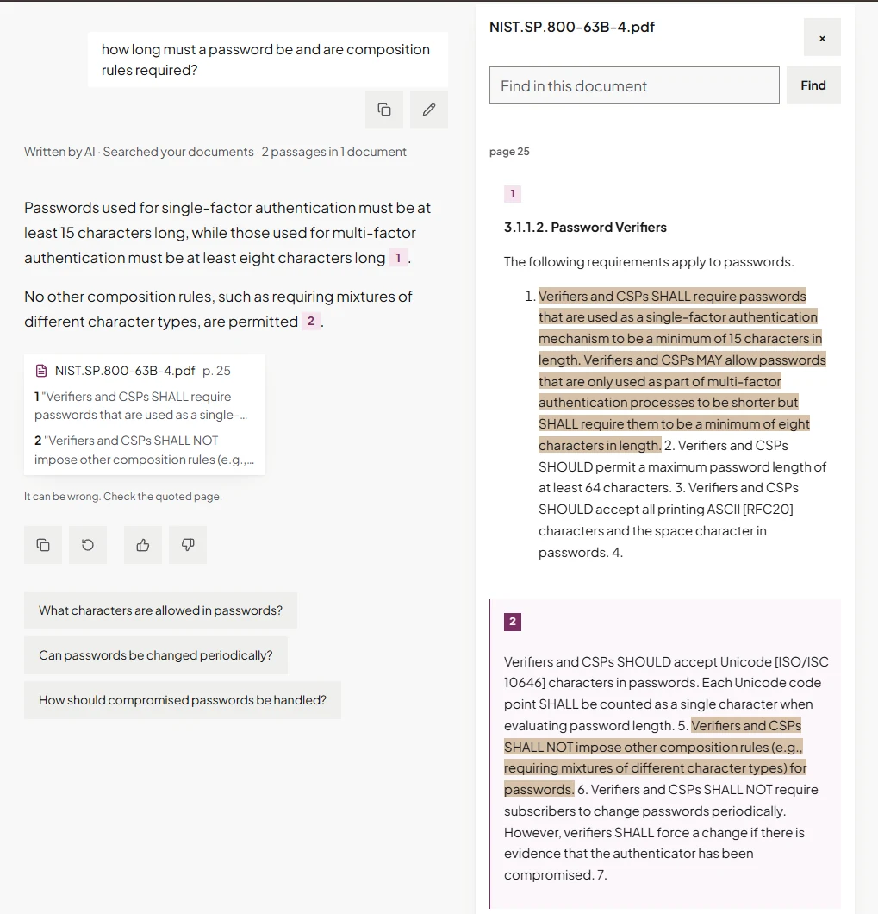
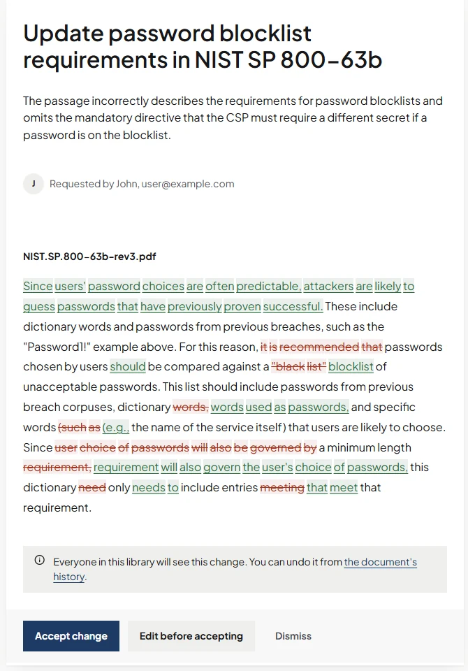

Lead software engineer, working mostly in Python, based in Canada.
I'm a software engineer working mostly in Python, with PostgreSQL, React and Angular on AWS. As an independent contractor I'm usually the only developer, and much of my recent work has been adding AI to products that clients use every day. I stay with a project from planning through to the handover guide.
A UK fire safety consultancy's engineers enter inspection findings on a form and get the finished report back, with a review and approval step for each role and a live dashboard of what's waiting. Reporting errors fell by 90%. When the dashboard slowed as the library grew, I found the slow queries and fixed them with better queries and indexes. At the first demo the engineers showed me why my template design was too rigid, and I rebuilt it with sections they set up themselves. I also wrote the user guides.
Several organizations share it, and each sees only its own buildings. AI reads the safety documents, a person checks the values, and the rules sit in tables staff edit themselves. A rule change that took two weeks became a five-minute edit, and assessments that took hours now take minutes. Each value the AI reads keeps the page and the quote it came from, and each rule has its own test. The backend is Django and the frontend is Next.js.
It reads supplier invoices, from PDFs and phone photos, into the exact format a finance system needs, and sends anything doubtful to a person. If one AI provider goes down, it switches to another. I cut reading time from over 90 seconds per invoice to under 25, and traced a separate three-minute step to four causes and brought it down to seconds.
Customers connect with their own API keys, issued separately for live, test and development use, stored scrambled and set to expire. The AI provider keeps none of the documents it reads. I ran the sessions with the cloud providers where the hosting was chosen, and worked out from measured use that it would cost about $13 a month for 100,000 invoices. I worked alongside the client's own developers.
I built this one myself, end-to-end. It answers questions from a team's documents and shows the exact quote behind each answer. An agent drafts updates when a source document changes and waits for a person to approve each one. I tested it on 30 questions with known answers. Cutting documents into smaller pieces made each answer 40% cheaper, and putting the best search results first raised the share of each answer backed by its sources from 91% to 98%. I also ran four AI models on the same questions and marked them by hand before choosing one.

Each team's documents are kept apart in the code and again by the database itself. Uploads are scanned for viruses, sign-in has a second step through an authenticator app, and new passwords are checked against known leaks. I planted a document telling the AI to approve its own changes and ran it four times. It failed all four, because only a person can approve. Each team has a spending limit, and it held when I sent 20 requests at once. I restored a nightly backup as a test and got back all 391 rows. 306 tests run on each change, along with a check on answer quality that blocks a change if answers get worse.

I built the tool staff use to set up datasets, with sign-in through their existing GitHub accounts and a step by step form that saves as they go, and approved changes pushed out to other systems automatically. I worked on a FastAPI pipeline that checks the data councils send in about buildings and sites, where every upload is tracked and errors reach the team in Slack.
I built security logging that gathered every log source of a client's cloud desktops into one audited feed, and led the weekly meeting with that client's security team. Our team split one large desktop image into a small shared base and separate images for each kind of user, including desktops with graphics cards. They start faster, and a security patch now goes in one place. I replaced a set of deployment scripts with one GitLab pipeline. For a platform financial advisors use to manage their clients' portfolios, I built custom interface components with Stencil and TypeScript for the Angular app. Stencil components work in other frameworks too, which let them be reused across products.
I moved a core library of over 400 files from Python 2 to Python 3, with its suite of about 1,500 tests running throughout, which made it possible to upgrade Celery from version 3 to 5. I connected the platform to Salesforce through background jobs that stay within its limits, with daily usage reports, and worked on Pardot marketing sign-ups, Sage Pay card payments and SendGrid email.
Teams plan work together in shared projects, move tasks along, comment, mention each other and attach files. When one person changes something, everyone else sees it right away without reloading the page. Built end-to-end in TypeScript, with Node.js, React and PostgreSQL, and one set of data rules shared by the server, the web app and a command line tool. Each request checks the person's role, and asking for a record you aren't allowed to see returns "not found". Links people type can't run code, and too many comments in a minute get a polite wait message with the draft kept. 403 tests pass against a real database.
Operators log each time a production line stops, AI suggests the reason, and a supervisor confirms it. A separate Node.js service checks the machine events as they arrive. I tested it with a simulated 10-minute feed of 2,000 events. All the good events were saved, and the repeated or broken ones were caught and sent back with the reason.
It pulls a playlist's video views, likes and comments from the YouTube Data API into Kafka, with every message checked against a fixed shape. Telegram sends an alert when the numbers change.
Developers build a profile with their work history and skills, write posts and comment, and their GitHub repositories are pulled in live. I built it with React, Node.js, Express and MongoDB. Passwords are stored hashed, and sign-in uses tokens.
Backend: Python, Django, Django REST Framework, FastAPI, Flask, SQLAlchemy, Alembic, Pydantic, Celery, RabbitMQ and Redis. Node.js with Express and Hono, and Zod.
Frontend: React, Next.js, Angular, TypeScript, JavaScript, Tailwind CSS, Vite, TanStack Query, Stencil web components, PrimeNG and Bootstrap.
Data: PostgreSQL, MySQL, MongoDB and DuckDB. Kafka, Snowflake, dbt, Airflow and Pandas.
Cloud: AWS (EKS, ECS, Lambda, SQS, S3, API Gateway, EventBridge and IAM) and DigitalOcean.
Deployment: Docker, Docker Compose, Kubernetes, Terraform, GitHub Actions, GitLab CI/CD, Nginx, Gunicorn, Caddy, systemd, Coolify and Linux servers.
Monitoring: Sentry, Prometheus, Grafana, Datadog, Fluentd, OpenTelemetry and Langfuse.
AI: the Anthropic and OpenAI APIs, LangGraph, MCP, retrieval with pgvector, and evals with ragas.
Testing: pytest, Vitest and Playwright.
Security: OWASP guidance, two-step sign-in, Argon2id and scrypt password hashing, PostgreSQL row-level security, ClamAV virus scanning, Docker secrets, least-privilege AWS IAM and Fluentd audit logging.
MSc Software Engineering with Advanced Research, University of Hertfordshire
BEng Electrical and Electronic Engineering, Landmark University
AWS Certified DevOps Engineer Professional
Certified Kubernetes Application Developer
SnowPro Core
Also: Full Stack Intelligence Engineer training, weekly Google Gemini training through 2024, and a Microsoft Power BI bootcamp.
Open to remote contract and permanent roles in Canada. My CV is available on request.